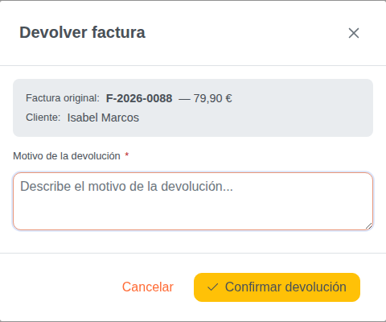
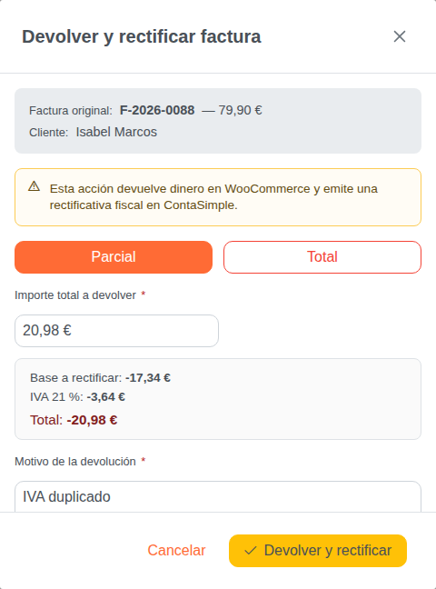
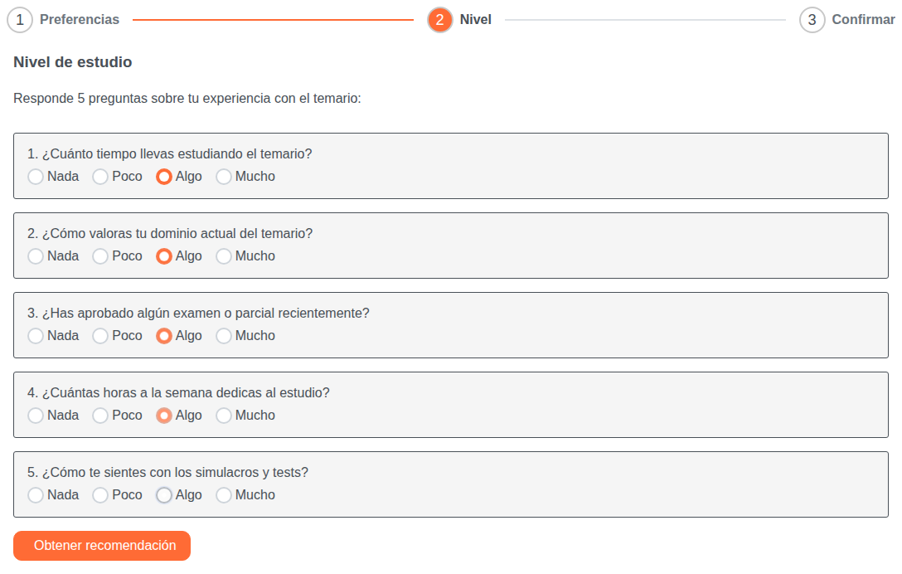
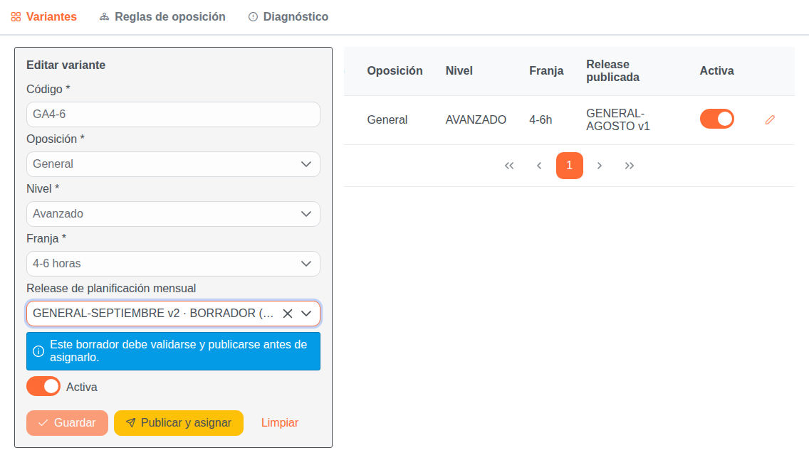

La operación deja de ser una confirmación opaca: permite devolución parcial o total, presenta el desglose fiscal y exige un motivo antes de ejecutar el reembolso idempotente.


Solo se muestra el estado posterior: antes el contenido estaba duplicado dentro del frontend. Ahora la pantalla consume preguntas y versión desde el backend, evitando que cliente y servidor diverjan.

Solo se muestra el estado posterior: el flujo de publicación y asignación no existía en la UI anterior. Un borrador no puede guardarse como si ya estuviera publicado; la acción dedicada activa la validación atómica del backend.
